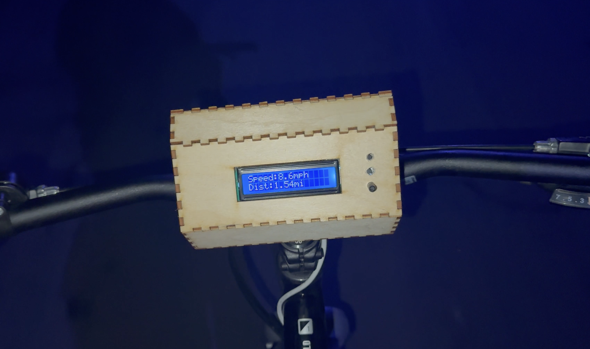

Projects

U.S. County Solar Ordinances & Sentiment Analysis Platform

Full-stack AI web application built at Strata Clean Energy — agentic pipeline, interactive map, county-level risk analysis.
Benchmarking PEFT Methods for LLMs

Deep learning research paper benchmarking LoRA, Sparse LoRA, QLoRA, and High-Rank LoRA across accuracy, speed, and memory.
Custom 32-Bit Pipelined CPU

Gate-level 32-bit processor design, built in Verilog, with a full 5-stage pipeline and custom ISA.
Bike Speedometer with Hall Effect Sensor

Arduino-based bike speedometer with hall effect sensor, LCD display, and custom 3D-printed enclosure.
Music Synthesis in MATLAB

MATLAB-based music synthesis recreating 'Eventually' by Tame Impala using signal processing fundamentals.
Wearable Electronic Instrument (under development)
[ photo: wearable-instrument-thumb.jpg ]
Glove-based instrument translating hand and finger movements into real-time music synthesis.